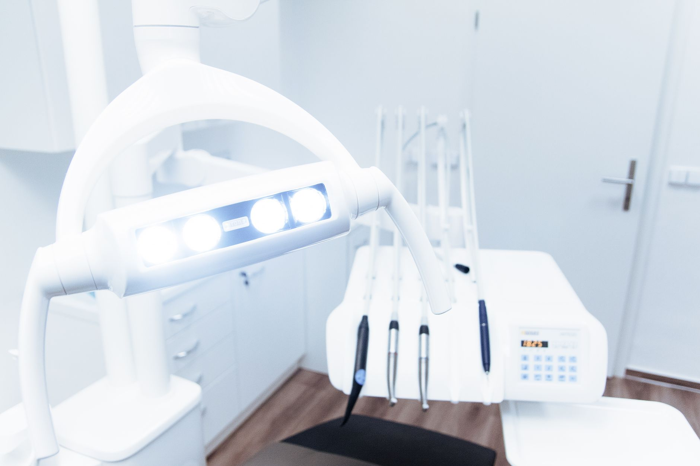

Dental practice · Addison
A healthier smile starts here
Call Cindy Phan DDS, PA to book your next visit.
- Phone+1 972 247 4614
- Visit15560 Quorum Dr, Addison, TX 75001
- HoursCall for hours

Services
Care for every stage of your smile
Checkups and cleanings
Routine exams and cleanings to help keep teeth and gums healthy.
Fillings
Repair of teeth affected by decay.
Teeth whitening
Options to brighten the colour of your teeth. Ask the practice what suits you.
Crowns and bridges
Restorations that cover or replace damaged or missing teeth.
Root canal treatment
Treatment for an infected or badly damaged tooth.
Dental implants
A replacement option for missing teeth. Ask the practice if it is right for you.
Your first visit
Simple from the first call
- Call the practiceSay what you need and ask which insurance plans they accept.
- Come inBring photo ID, your insurance card and a list of any medications.
- Plan your careYour dentist explains the options so you can decide at your own pace.
Opening hours
- Please call the practice for current opening hours.